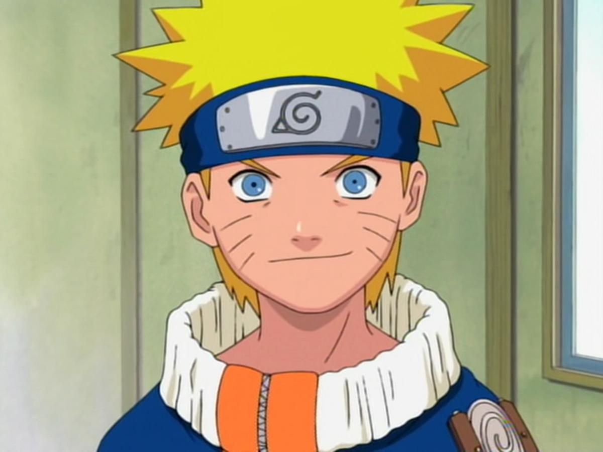

Personagens Principais

Naruto Uzumaki
ele é animado e nunca desiste, seu sonho é se tornar hokage
Sasuke Uchiha
ele é sério e determinado,e é esta em busca de vingança pela sua família
Sakura Haruno
ela é inteligente e forte, e amadurece muito na o anime